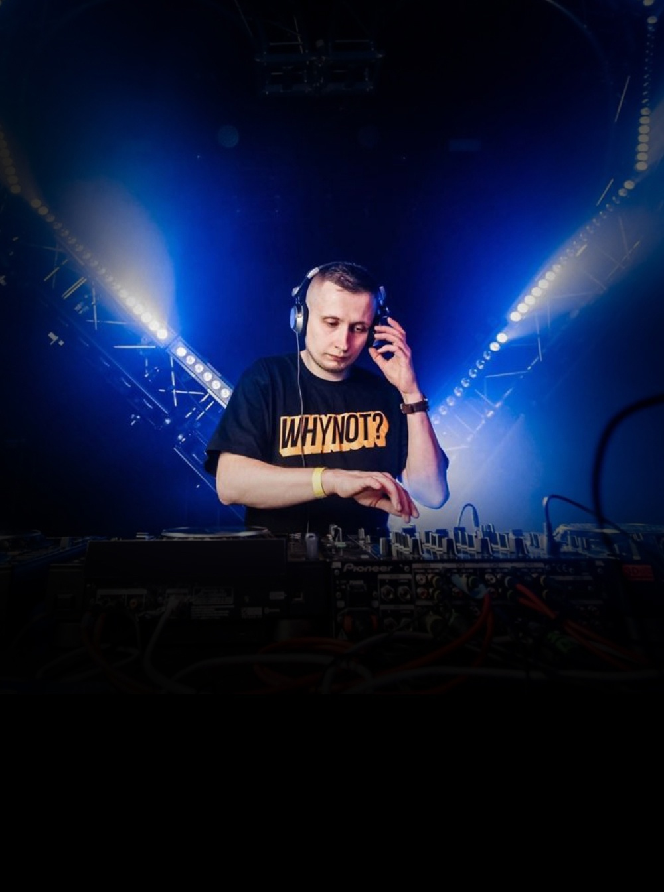

OZMA
Drum'n'Bass · Санкт-Петербург · 2005-н.в
Один из ведущих питерских drum&bass продюсеров с более чем 10-летней карьерой в сфере ломаных ритмов. Начав свою карьеру в 2005-ом с написания техно, постепенно он перешел на dnb.
География его выступлений давно вышла за границы России — его выступления проходят по всей Европе, а в своих сетах Антон всегда старается не ограничиваться каким-либо одним направлением, предоставляя публике весь спектр drum&bass звучания.